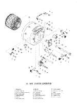
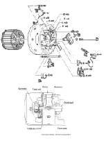
These little 100cc-185cc bikes are real easy to kick over. I can see no need for electric starters on them, but a lot of them do. The factories must have thought this was a good selling point. The starter/generator (sometimes called a Starter/Dynamo) is located on the end of the crankshaft and has the ignition points mounted to it too. You will only find these on small bikes because there is no gear reduction and they don't put out a lot of power. They are quite complicated. They were seen on these little bike up to the mid 1970s. It would seem they are quite reliable because I'm still seeing them, but they are starting to disappear.
Usually you will only run into these bikes as a cheap kids bike. If something major is wrong, you will not want to pay the money for the part. Why pay $200 to get a $100 bike going? You probably can still get a lot of the parts but, it's just not worth it.
If you do get a hold of one of these bikes you will need a good, fully charged 12 volt battery, in the system, for it to run. Hit the button and away you go. If nothing happens check and make sure the brushes are in good condition. Also check the grounds and all the wire connections for corrosion.
Below are some wiring diagrams, showing how this starter works and how it changes from starter to a Generator/Dynamo.
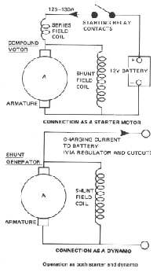 Starter/Generator (Dynamo) Wiring. |
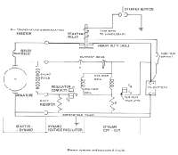 Starter/Dynamo and Associated Circuits. |
The starter/generator has coils wired in series for the starting of the engine and then it also has coils wired in Parallel or Shunt, to generate power once the engine is running. All this means, to us, is that there are two sets of coils to test. The coils can't be grounded (Shorted out) to the housing they ride in or have a broken or burned out internal wire that prevents current from passing through them.
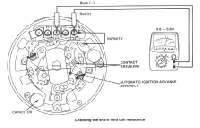 Checking the shunt field coil resistance. |
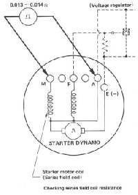 Checking series field coil resistance. |
The armature is tested like any armature. Continuity between the commutators and no continuity to the armature shaft.
There is no rectifier because this thing generates DC current but a lot depends on the voltage regulator. It keeps the DC volts to the battery under control and charges and changes the different coils in the starter/generator/dynamo unit.
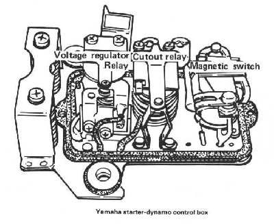
Now things start to get kind of complicated. You can change the settings in the voltage regulators because most of these things were made before anyone ever thought of solid state electronics. They usually come set right, from the factory. If you have to get into them, it usually means something is worn out, broken or goofy! You really need to run down a new one but, the bike just isn't worth the expense, unless you are restoring one. Yeah, right. We're going to win best of show with a great Yamaha 125cc AT1?
OK, if you really are going to restore one, you need to find an original factory shop manual so you can get all the settings, wires to the correct connectors, and everything else, set right.
If not, and you still want to get the bike running 'cause the kid's buggen you for a cheap ride, Here are some settings you might want to try.
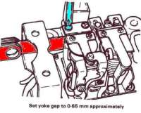 Voltage Regulator Yoke Gap |
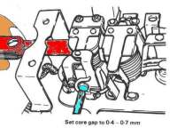 Voltage Regulator Core Gap |
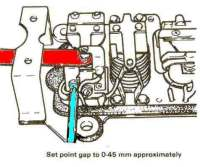 Voltage RegulatorPoint Gap |
Now if everything just does not work, and the rest of the bike looks pretty good (Good compression, carb clean, tires OK, rear chain looks good, Gas tank doesn't leak, etc.) let me suggest another way. The crank on the old AT1s was the same part number for the electric start model as the magneto model. Just pull off all the electric start stuff and put on the flywheel, coil plate and coils and the ignition coil off another magneto Ign. AT1. There are still a number of these old dogs lying around. At least there were in 2004, when I first wrote this. Look for an old broken one you can get parts off of.
I've always been able to get the electric starters to work, so I don't know for sure that everything will fit but, I'm 90% sure it will work and it's really the only cheap way out. Ignitions off a Yamaha 175cc CT1 might work too. I have pulled the head, piston and jug off a 175 and put it on a 125 and it worked just fine!
Switching the Ignitions might work on the Kawasaki's and Suzuki's too, but I can't say for sure.
Here are PDF files of the wiring systems and testing procedures for a all the Motorcycle Starter Dynamos that I could find. Most of the tests are very similar.
Yamaha AT2/AT3 Wiring   Yamaha YL2.
 Yamaha YL2.   Yamaha DT125 Wiring
 Yamaha DT125 Wiring 
Yamaha Dynamo Testing 1.   Yamaha Dynamo Testing 2.
 Yamaha Dynamo Testing 2.   Yamaha Dynamo Testing 3 ... very detailed.
 Yamaha Dynamo Testing 3 ... very detailed. 
Kawasaki BIL-A Wiring   Kawasaki Dynamo Testing.
 Kawasaki Dynamo Testing. 
Suzuki GT-185 Wiring   Suzuki M15D Wiring
 Suzuki M15D Wiring 
Suzuki Dynamo Testing 1.   Suzuki Dynamo Testing 2 ... very detailed.
 Suzuki Dynamo Testing 2 ... very detailed.
In all the millions of pages on the web, I'll bet this is the only place you will find this information. Thank you Jesus!
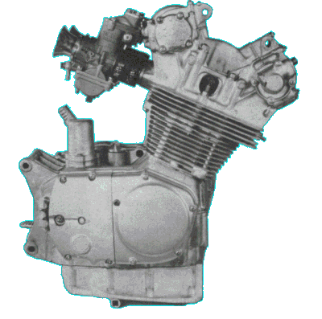 |
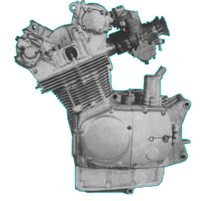 |

Copyright © Dansmc.com. All rights reserved.